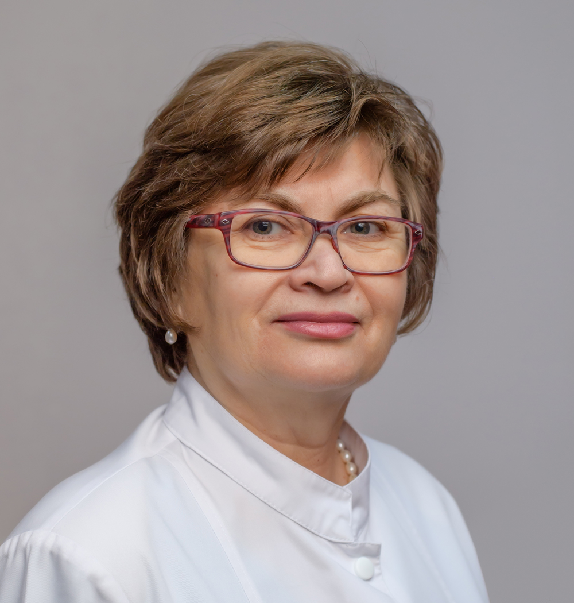

Dr. Gărduș Iuliana
Medic Primar Neurolog
Dr. Bâldea Adrian Petru
Medic Primar Neurolog
Dr. Deak Maria Gabriela
Medic Primar Neurolog
Dr. Hărăguș Horațiu Ioan
Medic Primar Neurolog
Dr. Toma Oana-Mădălina
Medic Specialist Neurolog